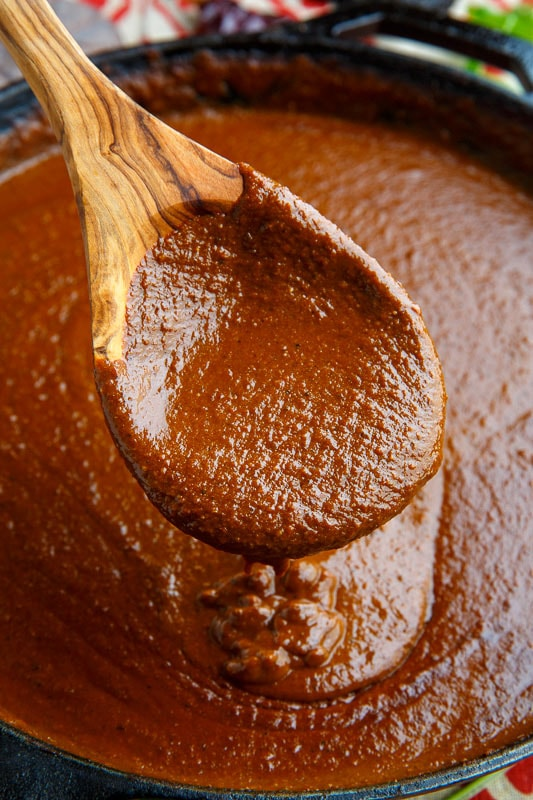

Mole

Description: My Grandma's Secret Mole Recipe
My grandma Susy has a secret recipe that will blow almost anyone's socks off or in this case tastebuds.
Ingredients
- Chicken
- Dona Maria Mole Sauce
- Coca Cola Can
- Abuelita Mexican Chocolate Tablets
Steps
- Heat the Dona Maria Mole Sauce in a skillet at medium high for 10 minutes
- Lower the skillet to low temperature and add the whole coca cola can
- After 10 minutes add the Abuelita chocolate tablets and let them melt
- Once chocolate is melted, mix the sauce with a wooden spoon for 5 minutes (still on low temperature)
- Preheat a separate skillet to medium temperature and put half a table spoon of olive oil
- After 5 minutes, add 2lbs of chicken on to the skillet and lower the temperature to low-medium heat
- Let the chicken cook for 25-30 minutes or once you see it is ready
- Once the chicken is ready, mix it in with the mole sauce and voila!